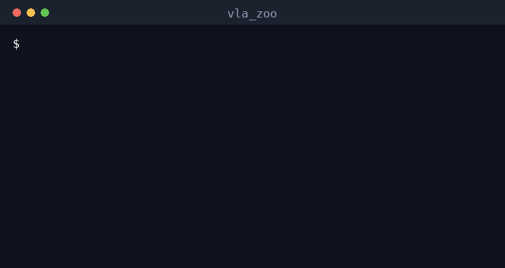
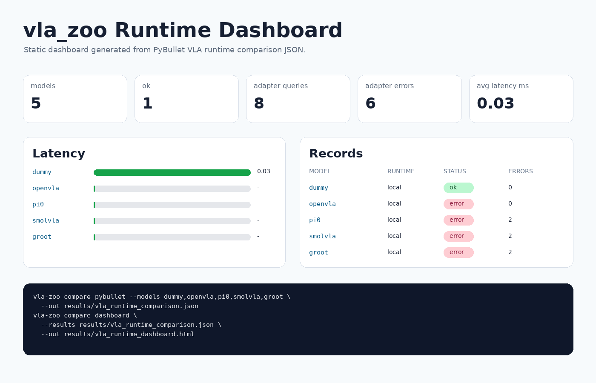

pip install -e . && vla-zoo quickstart — the real runtime boundary
on baselines, no GPU / weights / PyBullet.
What Works Now
The same BaseVLA.predict() boundary is used by the Python API,
OpenVLA adapter, HTTP server, ROS2 node, benchmark runner, and report generator.
60-second quickstart
pip install -e . && vla-zoo quickstart — runs the runtime boundary on baselines locally (no GPU/weights). Proves the plumbing, not model quality.
VLA runtime leaderboard
Adapters ranked by latency / throughput with measured memory; blocked adapters shown honestly. Runtime path, not task success.
Open leaderboardVLA evidence matrix
Contract, GPU, remote server, ROS2, PyBullet, and policy-quality evidence by model.
Open evidenceROS2 runtime
Launchable node with typed instruction, action, action chunk, status, and diagnostics.
Launch ROS2PyBullet simulation
Deterministic smoke scene for runtime demos, GIFs, and method comparisons.
Open GIF galleryReal-scene action probes
SmolVLA and OpenVLA-7b driven on real PyBullet renders; latency + action stream recorded. Runtime path, not task success.
Open comparisonCommanded EEF trajectories
Each adapter's recorded eef_delta stream integrated and animated into the end-effector path it commanded — overlaid as a race on a shared scale. Runtime path, not a real-EEF claim.
Open trajectory race{kind=link}
Real-Time Chunking scheduler
A latency-aware action-chunk scheduler (Real-Time Chunking style): freezing the actions guaranteed to execute during inference cuts the chunk-boundary jump ~76% vs naive async. Pure CPU simulation of the scheduling layer, not a policy-quality claim.
Open RTC simulationRemote GPU VLA path
OpenVLA remote server plus a health-first probe; heavyweight limits reported explicitly.
OpenVLA remoteSmolVLA remote serving
Isolated-environment server plan and robot-side client for the most feasible real-model path.
SmolVLA remoteGR00T (blocked)
Blocked until the NVIDIA Isaac GR00T stack; reproducibly probed (adapter refuses, no GR00T package on PyPI). No inference, no task-success claim.
GR00T statusBenchmark schema + replay
Versioned JSONL result schema and a ROS bag replay stub for reproducible latency/action-rate summaries.
Benchmark resultsJetson + remote GPU deployment
Lightweight robot-side runtime plus remote GPU serving, with guards, bridge examples, and the measured 16 GB-fit knobs (OpenVLA 4-bit, SmolVLA/pi0 --dtype bfloat16) tied together.
Run It Locally
pip install -e ".[dev,cli,server,sim]"
vla-zoo doctor --no-ros
vla-zoo predict --model dummy --instruction "hello"
vla-zoo demo pybullet --model dummy --out docs/assets/simulation_pick_place.gif
vla-zoo compare tasks --models dummy,scripted,random --tasks all
vla-zoo compare suite --out-dir results/vla_compare_suiteGPU VLA Path
Heavyweight VLA inference should run on CUDA locally or on a GPU workstation. The robot-side process can call the same prediction boundary through the remote client.
pip install -e ".[cli,server,sim,gpu,openvla]"
vla-zoo doctor --no-ros
vla-zoo gpu smoke --device cuda:0 --dtype float16
python examples/python/load_openvla.py \
--pretrained openvla/openvla-7b \
--device cuda:0 \
--dtype bfloat16 \
--unnorm-key bridge_orig
vla-zoo serve --model openvla \
--host 0.0.0.0 \
--port 8000 \
--pretrained openvla/openvla-7b \
--device cuda:0 \
--dtype bfloat16 \
--unnorm-key bridge_orig
vla-zoo serve-plan \
--models openvla,pi0,smolvla,groot \
--public-host gpu-box \
--base-port 8001ROS2 Path
The ROS2 package is separate from the Python wheel. It imports the same runtime package and publishes typed action/status messages instead of commanding hardware.
pip install -e .
colcon build --base-paths ros2 --symlink-install
source install/setup.bash
ros2 launch vla_zoo smoke.launch.py
vla-zoo ros smoke-report --output-dir results/ros2_smoke
vla-zoo ros remote-smoke-report \
--model openvla \
--remote-url http://gpu-box:8001 \
--output-dir results/ros2_remote_openvla \
--duration-sec 30
vla-zoo ros remote-smoke-plan \
--model openvla \
--remote-url http://gpu-box:8001 \
--markdown-out results/ros2_remote_smoke_plan.md
timeout 30s ros2 launch vla_zoo remote_smoke_record.launch.py model_name:=openvla remote_url:=http://gpu-box:8001 output_dir:=results/ros2_remote_openvla
ros2 launch vla_zoo action_replay.launch.py action_log_path:=results/ros2_smoke/vla_actions.jsonl
ros2 launch vla_zoo dummy.launch.py publish_actions_in_dry_run:=true
ros2 launch vla_zoo remote.launch.py remote_url:=http://gpu-box:8000Visible Reports
These are static artifacts generated by the runtime demo/report path. They are meant to be linked from README, GitHub Pages, issues, and benchmark notes.
PyBullet report
HTML summary of task telemetry, query counts, latency, and action magnitude.
Open reportAction Playground
Scrub PyBullet traces beside GIFs and inspect action vectors frame by frame.
Open playgroundLocal + remote playground
Compare local baseline traces with a temporary HTTP dummy server runtime trace.
Open playgroundTrace verification
Model/task matrix for recorded Action Playground traces, GIF links, and errors.
Open verificationRemote runtime smoke
Three PyBullet tasks recorded through a real local HTTP server and remote client.
Open smoke reportMethod profiles
Adapter input requirements, action shape, chunking, dependencies, and caveats.
Open profilesVLA evidence matrix
Contract, GPU, remote server, ROS2, PyBullet, and policy-quality evidence by model.
Open matrixArtifact index
Curated catalog of every report with status, source command, and evidence caveat.
Open indexAdapter cards
Per-adapter runtime contracts, verification notes, dependencies, and license caveats.
Open cardsRobot compatibility
Adapter fit against a single-camera EEF robot profile without loading weights.
Open reportROS2 remote smoke
GPU server, robot-side launch, dashboard, action trace, and bundle commands.
Open planROS2 remote evidence
Recorded dummy HTTP server run proving ROS2 node to RemoteVLAClient to action topic.
Open evidenceTask verification
Three PyBullet runtime tasks for baseline adapters and external adapter status.
Open verificationExternal status
OpenVLA, openpi, SmolVLA, and GR00T status without claiming false support.
Open statusSmolVLA GPU probe
Real LeRobot SmolVLA local CUDA inference through the vla_zoo adapter boundary.
Open probepi0 compatibility
Version matrix for pi0: pi0_base is version-matched (bf16 fits 16 GB), local inference gated on the PaliGemma tokenizer.
Open notesGR00T block probe
Reproducible block: the adapter refuses (MissingDependencyError) and no GR00T package exists on PyPI; the real runtime is the NVIDIA Isaac-GR00T GitHub stack.
Open probeSmolVLA bf16 serve probe
A SmolVLA server launched with --dtype bfloat16 returned a typed 6-DoF action over HTTP. Verifies the serve --dtype path; not task success.
SmolVLA PyBullet probe
Local CUDA SmolVLA queried on rendered PyBullet images and 6D simulation state.
Open reportReal-scene probe comparison
SmolVLA p50 ~382 ms vs OpenVLA-7b 4-bit p50 ~2.0 s on real renders. Blank success rate: no task-success claim.
Open comparisonRanked benchmark aggregate
vla-zoo bench-aggregate merges per-run summaries into one table ranked by latency p50 (SmolVLA #1, OpenVLA #2), with a per-model roll-up. Runtime path, not task success.
Open aggregateSmolVLA real-scene probe
Full 6D action stream recorded on real PyBullet frames (21 queries). Runtime path, policy quality not verified.
Open probeOpenVLA real-scene probe
OpenVLA-7b (4-bit) 7D action stream on real PyBullet frames (21 queries). Runtime path, not task success.
Open probeAction analysis
Rate, gap, repeat, near-zero, and per-dimension checks for VLAAction logs.
Open analysis
Adapter Status
| Adapter | Status | Purpose |
|---|---|---|
dummy |
available | Dry-run adapter for CI, docs, ROS2 launch, and deterministic smoke demos. |
scripted, random |
available | Baselines for the bundled PyBullet scene and comparison reports. |
openvla |
optional | Lazy Hugging Face OpenVLA integration; local heavy probe is documented separately. |
smolvla |
optional | LeRobot SmolVLA adapter with local CUDA inference-path probe. |
pi0 |
remote-first | openpi/LeRobot adapter with opt-in local loading and recommended remote runtime. |
groot |
scaffold | Experimental adapter path for external humanoid/generalist stacks. |
Safety Boundary
vla_zoo publishes typed action messages. It does not directly command hardware by default. Real robot deployments should add watchdogs, stale-action timeouts, action clipping, and deterministic high-rate controllers downstream of the low-rate VLA policy.